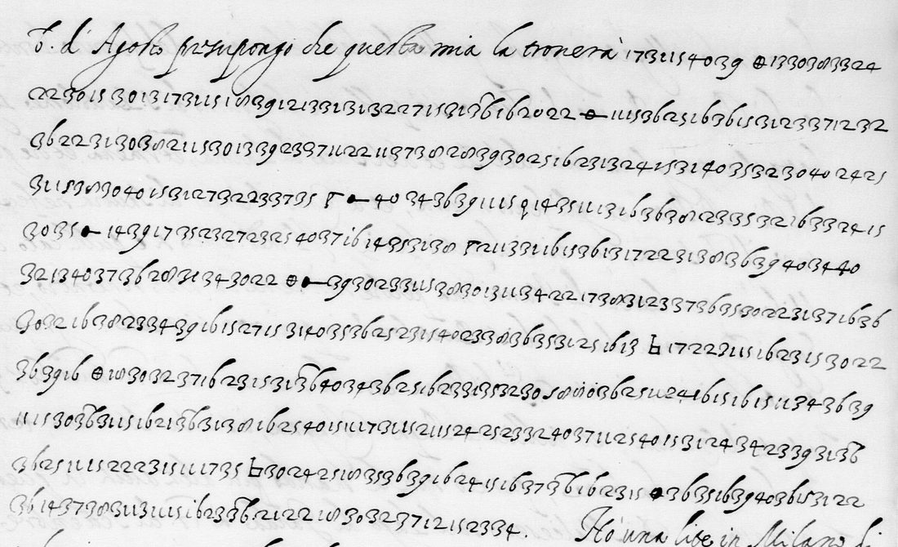

01 The letter and the key
The letter is dated 17 de Sett.re 1590 and addressed Ill.mo et Ecc.mo Sig.r mio Zio Oss.mo. It answers four letters of Nevers (12, 27 and 20 July, 6 August) and runs from f. 92r to f. 93r. The clear passages deal with family and business: Giulio Capilupi chosen as the new agent in place of Malegnano, the citadel of Casale, the outlaw Piccolomini, the imprisonment of Nevers’s daughter by the League, and a lawsuit at Milan with the Duchess Dorothea of Brunswick. The politics is in figures. Near the end the writer comments on the ciphers themselves. The cipher Nevers sent is molto artificiosa but hard to use without errors, so Nevers should use “the last one I sent you, which is used in this letter too”.
That last cipher is in Nevers’s key collection: BnF fr. 3995 f. 64, Per Cavare 1590 (Gallica btv1b525085665, view 131), no. 35 in Tomokiyo’s list. Its values are:
- Letters, with homophones: 11 m, 12 f, 13 a, 14 h, 15 e, 16 n, 17 p, 18 g, 19 b, 20 z, 21 d, 22 a, 23 t, 24 u, 25 o, 28 u, 30 l, 31 r, 32 i, 33 c, 34 t, 35 o, 36 e, 37 i, 38 a, 39 o, 40 s. An overbar on a letter figure doubles it.
- Words and names, 41–99: 42 Mons. di, 43 Gran Duca di, 45 Papa, 47 Re di, 55 Cardinale di, 58 Duca di, 60 Legato, 80 Francesi, 81 Spagna, 84 Francia, 96 Spagnoli, 97 Roma; 26 Inglesi, 27 Venetia and 29 Consiglio sit among the letters.
- Signs: ● che, a barred θ per, ⊔ et, ⊕ S. M.tà, ⊡ S. Ecc.za, a flagged Γ S. A., T mille, + conto, and others.
02 The reading
Deciphered passages in bold, clear text plain; [..] is a stretch not read, [?] a doubtful word. The writer’s spelling is kept.
f. 92r: the death of Sixtus V
… non lasciando di dirle, che è opinione di molti, che la morte del Papa sia stata procurata con veleno da Spagnoli, non lo potendo far risolvere a favor loro contro cotesto Regno di Francia, la conservatione del quale è desiderata da tutti i buoni Italiani, conoscendosi P. che, anichilata cotesta potenza, li medesimi Spagnoli procureranno di sottoporsi a ognuno [..] S. Ecc.za, da che mi spiace per i molti buoni effetti che mi prometto che ne debbano seguire, et veram.te da tutti i Potentati Italiani non è cosa più desiderata della conversione del Rè al Catolicismo, il che seguendo, si vede chiaramente aperta alla via della grandezza [..] a questo Regno di Francia.
“Many believe that the Pope’s death was procured with poison by the Spaniards, since they could not bring him to decide in their favour against this Kingdom of France, whose preservation all good Italians desire, knowing that once that power is destroyed the Spaniards will try to subject everyone …; nothing is more desired by all the Italian powers than the King’s conversion to Catholicism, if that follows, one sees the way clearly open to the greatness … of this Kingdom of France.”
f. 92v: the King’s conscience
… cose tutte [..] che per interesse di stato la devono far risolvere a correre la fortuna di [..] come fanno Venetia et sì tutti gli altri principi et nobiltà francese [..] dubitando stante la [..] la sua conscienza, che in così universal concorso se le possa opporre mancamento alcuno per conto della religione. Mi è piacciuto infinitam.te intender che quello che il Legato hà scritto in Italia nel partir di Monsignor [..] sia stato menzognero …
Nevers, a Catholic who had joined Henri IV, should “for reasons of state resolve to share the fortune of [the King], as Venice and all the other princes and the French nobility do …, [no longer] fearing that in so universal a concurrence any fault could be laid against his conscience on account of religion.” What the Legate (Caetani) wrote to Italy has proved a lie.
f. 93r: a message for the King

… presupongo che questa mia la troverà presso S. M.tà, alla quale la priego far riverenza per me, con certificarla della ottima mia volontà verso il suo Re, al servitio di che, sì come non hò mancato in quello che hò potuto sin hora di darne c[..] parte, e si stia sicura la S. M.tà per[?] oltre la mia particolar inclinatione, et verso cotesta corona, et parimente la con S. M.tà gli interessi contro il [..] comune nemico, me le renderà sempre devotissimo servitore, come a tempo et luogo conveniente conoscerà chiaramente da gli effetti.
Nevers is to assure the King of Mantua’s goodwill. Mantua’s own inclination, and shared interests against the “common enemy” (Spain), will make him the King’s most devoted servant, as the King will see from the effects at the right time and place. For an Italian prince bordering Spanish Milan, this was a guarded pro-Bourbon declaration, sent under cipher in the month after Sixtus V’s death.
03 Method
- Prior work. DECODE (Non-decrypted, cipher type unknown) and Tomokiyo’s nevers.htm. Tomokiyo lists the key, not this letter. No earlier decipherment was found.
- Key. Tomokiyo’s description of no. 35 pointed to fr. 3995 f. 64, which was read from the Gallica image.
- Transcription. The digit runs were transcribed from the DECODE high-resolution strips: f. 92r in the main session, ff. 92v and 93r by two sub-agents. Unseparated figures lose their pairing whenever a digit is misread.
- Decoding. A beam decoder (
beam.py) pairs the digits and scores readings with the project’sit-cinquecentolanguage model. It tries the alternatives 3/9, 0/8, 7/8 and 27/28 where the hand makes them look alike. The sign values were then read from the key sheet. - Retry. The doubtful lines were re-read at triple scale and decoded again. This recovered most of ff. 92v and 93r.
- Blind re-read. Every unread stretch was then transcribed again at four times scale by a sub-agent that had not seen the earlier digits, and the two versions compared. This read contro cotesto Regno di Francia, tutti i buoni Italiani, anichilata cotesta potenza, si vede chiaramente, far riverenza per me and in quello, and confirmed sottoporsi as written: 56 more tokens.
- Second image. The BnF microfilm of fr. 3979 on Gallica (btv1b9060544v, views 160–162) was used to re-read every unread stretch. On f. 93r the q-like sign is the key’s ♀ non and the next ● che, and the microfilm gives 14 35 31 38 hora: sì come non hò mancato in quello che hò potuto sin hora, 15 more tokens.
04 What remains
45 of 923 tokens are unread (measured from the transcriptions; reading.md). Each stretch was re-read independently at four times scale twice, and again on the Gallica microfilm, without a fit:
- f. 92r, line 5: about 10 tokens (la nda a a di) before S. Ecc.za.
- f. 92r, line 8: about 27 tokens in the middle, including 26 Inglesi. Probably the writer’s own slips; a beam search allowing any one digit to be substituted finds no Italian.
- f. 92v: about 6 tokens after dubitando stante la (la mondezza a me as written). The three signs there are nulls on the key.
- f. 93r, line 8: a looped, dotted code group before comune nemico, perhaps [Re di] Spagna.
No other letter in this cipher is on DECODE, and there is no clear copy. The key is complete. The digits there are the same on the DECODE scans and the microfilm, so these are the writer’s own enciphering slips; only a second copy of the letter would settle them.
05 Sources
- BnF, Français 3979, ff. 92–93: DECODE R4176 (images behind a login).
- Key: BnF, Français 3995, f. 64, Per Cavare 1590, Gallica btv1b525085665, view 131.
- Satoshi Tomokiyo, Cryptiana, “Ciphers of the Duke of Nevers” (nevers.htm), cipher no. 35.
Transcriptions, decoder and working reading: gonzaga1590/ in the repository.